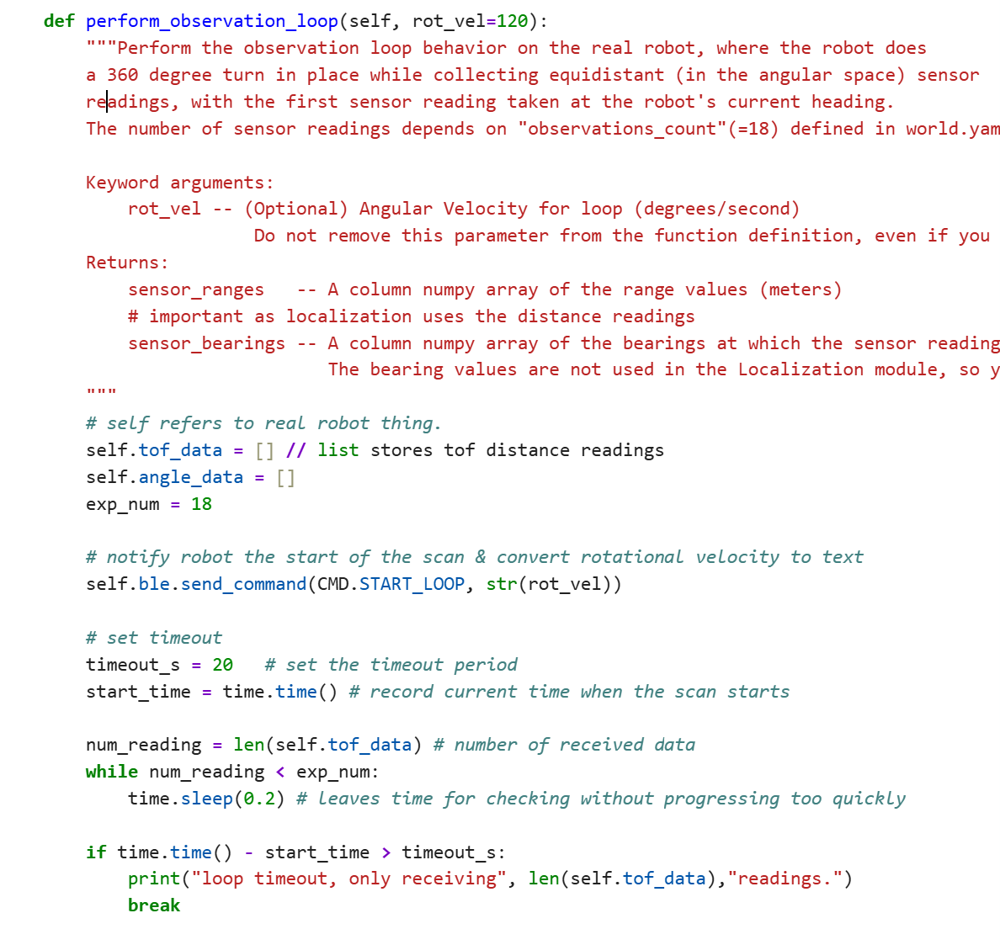
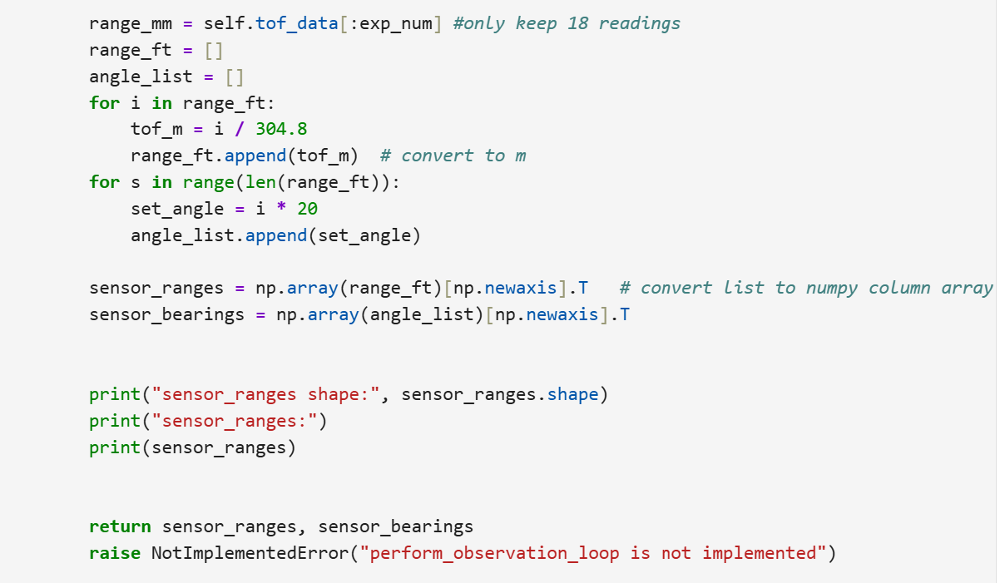

Lab 11：Localization on the real robot
Objective
The objective of this lab is to perform localization with Bayes Filter on the actual robot. As in prediction step the robot motion is so noisy, Update step will be used to based on 360 degree scans with TOF sensor. This lab code is mainly based on lab 9 code.
Task One: Test Localization in Simulation

In the simulation, odometry is plotted in red; ground truth is in green; belief is in blue. As shown, odometry is very apparently off the ground truth as error accumulates across each step. Instead, ground truth and belief look very familiar to each other, as Bayes filter does a decent job in simulation.
Task Two: Bayes Filter on Robot
As provided code has already offered localization program which covers bayes filter calculation, I was writing to make robot perform a 360-degree scan and send ToF measurements back to python. The whole process includes commanding robot to rotate collecting distance readings, converting them to required format and having them compared with expected readings contained in localization code.


The code here basically is translated from lab 9. The function acts as the linkage
between sensor acquisition and probaility localization. It sends a command and
starts the robot rotation motion
to read distances across different orientations. Similarly, it checks if the number of
collection hits its range and waits for data ready to be collected at the same time. A timeout
section is added to prevent infinite waiting once robot cannot complete the 360-degree scan.
After receiving data, function converts distance measurments from millimeters to feet
and lists into numpy column arrays which match the input format for bayes filter update
step.
Unfortunately, my robot cannot consistently collect 18 data while rotating 360 degrees.
The potential reason is that TOF polling was interfered with motor motion. When collection
data gets compiled into list, data is not ready. Therefore, I failed to localize the robot
in the map. In theory, Bayes localization relies on probability distribution as robot motion
and sensor data are noisy. For example, wheel interaction with ground, battery voltage and
ble communication timing are all differentiating the real motion from simulation. Errors in observations
can result from robot motion system (such
as overshoot,) time delays, TOF polling delay. In simulation, sensor measurements and
robot motion gets idealized. In my case, invalid readings severely affect distance readings
as Bayes update step interprets reading as actual measurement of distance to the wall.
Reference
Thanks for Zoey Zhou, Michelle Yang and Selena to help me debug the robot rotation. I used ChatGPT to clarify some confusion regarding function perform_observation_loop .